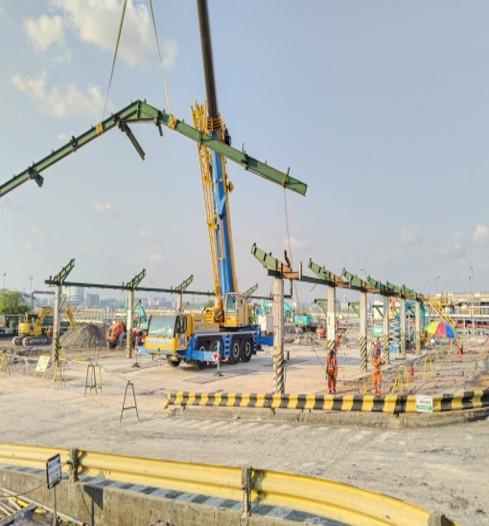
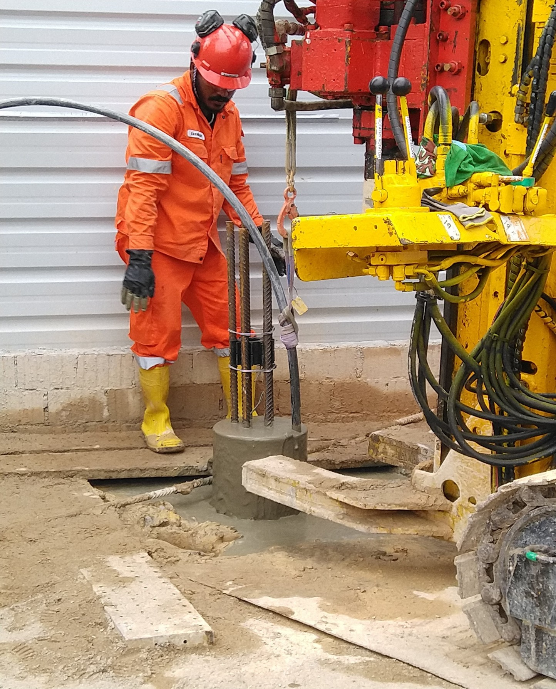
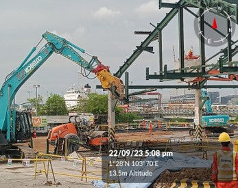
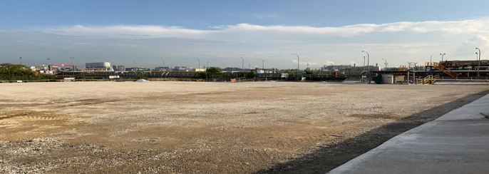
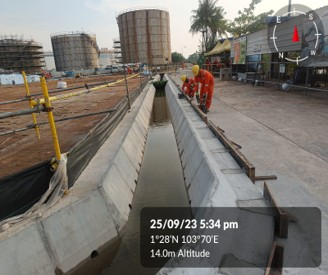
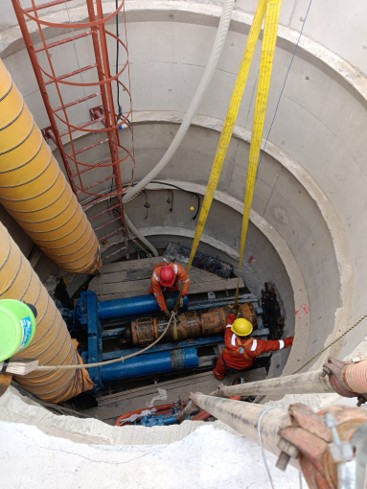

A1
Construction
General contracting, preconstruction and planning, construction management, and industrial project execution.

A full multi-page Toyah concept using your real logo and project photos, shaped through Constructivism, Brutalism, and Neobrutalism into a stronger industrial brand presence.
This refreshed homepage now uses your actual site and construction photos to turn the visual concept into something much closer to a real presentation site. The structure still centers on overview, services, projects, testimonials, clients, and contact.
We translate the company’s current promise into a more forceful visual message: meet schedules, exceed requirements in quality and reliability, and deliver responsibly.
The live site frames Toyah as a provider of bespoke engineering services. This redesign now has the image depth to support that message with real visual credibility.
General contracting, preconstruction and planning, construction management, and industrial project execution.
AutoCAD drafting, piping design, and vessel design framed as precision-first technical capability.
Commercial and residential civil works, structural design, soil testing, and site support scopes.

Main case-study block for refinery, plant, and engineering-heavy construction scopes where safety, schedule, and coordination drive confidence.

Compact project panel for excavation, groundwork, and site development activity.

Strong project block for utilities, underground works, and foundation-related execution.




